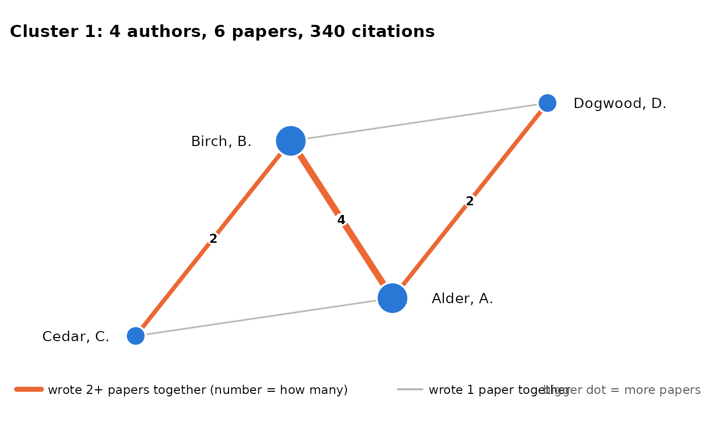

Each author is a dot (bigger means more papers). A line joins two authors who share a paper: thin gray for one shared paper, thick orange for two or more, with the number of shared papers printed on the line. Labels are placed on the side of each dot away from its co-authors so they rarely sit on a line. Uses base graphics; needs igraph for the layout.
Usage
plot_cluster(
x,
component,
seed = 1,
main = NULL,
label_cex = 0.9,
core_only = FALSE,
simple = FALSE,
uniform = simple,
key = TRUE
)Arguments
- x
An object from [author_network()]. For clusters supported by two or more papers, build it with `author_network(data, min_component_papers = 2)`.
- component
Cluster ID, as shown on `plot(x)` and in `x$components$component`.
- seed
Random seed for the layout. Change it to get a different arrangement of the same cluster (the arrangement has no meaning; only the connections do).
- main
Title. The default builds one from the components table.
- label_cex
Label size. Default 0.9 (1.2 when `simple = TRUE`).
- core_only
Show only authors on two or more papers, and note how many one-paper co-authors are hidden. Fewer dots, easier for a general audience.
- simple
Larger dots and labels and a one-line key. Meant for slides.
- uniform
Draw every dot the same size (default `TRUE` when `simple`).
- key
Draw the key under the map. Default `TRUE`.
Examples
if (requireNamespace("igraph", quietly = TRUE)) {
f <- system.file("extdata", "sample_authors.csv", package = "citelens")
net <- suppressMessages(author_network(read.csv(f, stringsAsFactors = FALSE),
min_component_papers = 2))
net$components
plot_cluster(net, net$components$component[1])
}
